Physique

Musique

Chroniques éparses : Physique.
Table des matières :
1) Chandelle à bascule.
2) Capture d'une balle.
3) Equilibre stable.
4) Moteur simplissime.
5) Synchronisation spontanée.
Cette expérience, futile en apparence, a suggéré que l'on dispose les sections de 1er et de seconds violons, d'altos et de violoncelles des orchestres symphoniques, sur des plates-formes posées sur rouleaux afin d'obtenir que les musiciens jouent enfin ensemble !
6) Bachelier, où est la faille ?
La présentation d'un problème recourt parfois à des simplifications - louables, à première vue - qui sont de nature à désorienter sinon fourvoyer le lecteur. Quel étudiant universitaire en sciences pourrait démêler rapidement (et même lentement !) le pseudo-paradoxe suivant ?
Un véhicule, de masse m, animé de la vitese v0 par rapport au sol, atterrit tangentiellement, touchant le sol à l'instant t = 0. Les freins ayant été préalablement bloqués, il s'immobilise bientôt sous l'effet des forces de frottement. Son énergie cinétique passe donc de la valeur classique, Kin = m v02/2, à la valeur Kfin = 0. Cette énergie n'a pas disparu pour autant, elle se retrouve (intégralement ? pas si sûr, cfr infra) sous forme de chaleur, Q, dissipée dans les pneumatiques et le sol. Jusque là, tout semble aller bien. Là où les choses paraissent se corser, c'est lorsqu'on observe la scène dans le référentiel (inertiel, comme celui lié au sol), animé de la vitesse v0 par rapport au sol. On serait tenté de raisonner comme suit : le véhicule passe de la vitesse nulle à la vitesse -v0 (c'est correct) donc il acquiert une énergie cinétique, m v02/2. D'où vient cette énergie, sûrement pas des freins qui se refroidissent !
Solution. Le piège se situe au niveau d'une hypersimplification au niveau de l'énoncé, renforcée par le dessin suivant (à gauche), qui sème le trouble. La conservation de l'énergie ne se conçoit que dans un système isolé et le fait est que le système représenté à gauche ne l'est qu'imparfaitement. Considérer que le sol est rivé à une terre immobile donc qu'il n'intervient pas dans le bilan énergétique est faux : on s'en rend compte en remaniant le dessin comme représenté à droite.
Le recul du sol doit être pris en compte et c'est ce que la figure de droite représente en posant ce sol sur une surface de base sans frottement. A présent les bilans énergétiques s'établissent comme suit, selon le référentiel dans lequel on travaille :
- Dans le référentiel absolu, S, on a que les vitesses des masses m et M évoluent selon les lois, v = v0- (f/m) t et V = 0 + (f/M) t. L'instant final, tfin = Mm v0/[(M+m)f], est celui où la vitesse relative de m par rapport à M devient nulle (V=v). A cet instant, l'ensemble, M+m, se déplace à la vitesse m v0/(M+m). Le bilan énergétique se détermine comme suit : à l'instant initial, tin = 0, Ein = K(m) + K(M) = m v02/2 + 0 et à l'instant final, tfin = Mm v0/[(M+m)f], Efin = K(m) + K(M) + Q = 0 + m2 v02/[2(M+m)] + Q.
La quantité de chaleur dissipée, Q, vaut le travail de la force de frottement lors du mouvement relatif des surfaces,
Au bilan et après simplifications, on a que l'énergie se conserve sous la forme, Ein = Efin. Bien noter que ce bilan ne dit pas tout-à-fait que la quantité de chaleur dissipée vaut l'énergie cinétique initale de m car la terre en reculant emporte une partie microscopique de l'énergie (le rapport m/M est ridiculement petit) mais c'est cette différence qui règle son compte au pseudo-paradoxe. Voyons cela de plus près en raisonnant dans le référentiel en mouvement, S'.
- Dans le référentiel, S', animé de la vitesse, v0, par rapport à S, les vitesses évoluent selon les lois, v = 0 - (f/m) t et V = -v0 + (f/M) t. L'instant final, tfin = Mm v0/[(M+m)f], n'a pas changé, se calculant comme dans S. De même, la quantité de chaleur dissipée, Q, vaut encore, Q = Mm v02/[2(M+m)]. Le bilan énergétique se détermine comme suit : à l'instant initial, tin = 0, Ein = K(m) + K(M) = 0 + M v02/2 et à l'instant final, tfin = Mm v0/[(M+m)f], Efin = K(M+m) + Q = M2 v02/[2(M+m)] + Mm v02/[2(M+m)] = M v02/2 = Ein. L'énergie est bien conservée et la contradiction disparaît. Autrement dit, l'énergie se conserve dans ce référentiel mais il faut tenir compte du recul de la terre ! C'était déjà le cas dans S mais cette subtilité n'y jouait pas un rôle aussi apparent.
- Le bachelier vraiment très curieux souhaitera peut-être vérifier la conservation de l'énergie dans le référentiel (non inertiel !), lié à la masse m. La deuxième loi de Newton continue de s'appliquer, dans ce référentiel, à condition de considérer qu'un champ fictif d'inertie y règne, indiscernable d'un champ de gravitation, g = f/m, orienté en sens contraire de l'accélération absolue de m, soit de gauche à droite sur la figure. Le bilan énergétique doit, cette fois, prendre en considération qu'une énergie potentielle de type, mgh, est associée à ce champ. La masse m est solidaire du référentiel non inertiel donc son énergie cinétique est nulle à tout instant. On peut en dire autant de l'énergie potentielle puisque la position de m est évidemment invariable par rapport à elle-même (mgh = 0 car h = 0). En définitive, le bilan énergétique ne fait intervenir que M et Q.
En détail, l'énergie cinétique de M diminue de la valeur Kin = M v02/2 à la valeur Kfin = 0. L'énergie potentielle augmente (car en mouvement relatif, M se déplace vers la gauche par rapport à m (il remonte les lignes de champ), d'une quantité égale à M gfictif h = M (f/m)(em-eM) = M2 v02/[2(M+m)]. Au bilan, on vérifie que l'on a bien : M v02/2 - M2 v02/[2(M+m)] = Mm v02/[2(M+m)] = Q, comme il se doit. On note que Q possède la même valeur dans tous les référentiels considérés.
7) Billard rectangulaire, classique et quantique.
Les billards considérés par les mathématiciens et les physiciens ont peu de points communs avec le divertissement bien connu : ils considèrent habituellement des aires planes, limitées par une courbe périmétrique simple (= sans point multiple) et convexe (= toute droite du plan coupe la courbe en moins de 3 points). Les points anguleux sont autorisés (comme dans les billards polygonaux) et certains auteurs étudient même des situations plus complexes qui ne nous concernent pas ici (billard à 2 dimensions sur une surface non plane, billard à 3 dimensions, billards en présence d'un champ de gravité actif (non orthogonal à la table), etc. Les règles de ce jeu idéal sont faciles à comprendre : tout point matériel, qui se déplace sans frottement sur la table, se réfléchit sur le périmètre en respectant la loi de l'optique géométrique. Dans le cas des billards polygonaux, on peut ajouter cette règle que tout point atteignant un coin rebondit en revenant sur ses pas.
Aussi étonnant que cela puisse paraître, beaucoup de questions élémentaires relatives à des billards très simples ne sont toujours pas élucidées. Par exemple, l'(in)existence de trajectoires périodiques dans un billard triangulaire obtusangle n'est pas démontrée lorsqu'on exclut les coins. La même question est, par contre, facile à résoudre dans le cas du billard rectangulaire grâce au fait qu'on peut indéfiniment paver le plan à l'aide de rectangles identiques. Voici pour fixer les idées, quelques trajectoires périodiques dans un rectangle dont les côtés ont été choisis égaux à a=2 et b=1 (exigez un va-et-vient complet dans les deux premiers exemples !) :
Commençons par chercher toutes les trajectoires périodiques en les classant dans l'ordre des longueurs croissantes. L'intérêt de la solution à cette question apparaîtra lorsqu'on passera au billard quantique. Une procédure est connue qui résout la question posée de façon particulièrement élégante.
Pour déterminer la trajectoire suivie par le point mobile lorsqu'on le lance à partir d'un point quelconque, disons, (x=0.7, y=0.3), on pourrait calculer les rebonds successifs sur les côtés du rectangle; c'est possible mais c'est fastidieux et il y a beaucoup mieux à faire. On commence par paver le plan par des copies du rectangle de base comme l'indique la figure suivante. Dans chaque nouveau rectangle ainsi défini, on pose, de proche en proche, que les points homologues au point de départ sont situés symétriquement par rapport au côté qui les sépare. La figure représente quelques copies du rectangle primitif et les points homologues (seuls les points noirs importent à ce stade de l'exposé). En développant un minimum de géométrie élémentaire, on se convainc aisément que tout segment de droite qui joint le point initial à l'un quelconque de ses homologues représente le déplié exact d'une trajectoire brisée fermée (revenant au point de départ). La figure en représente deux, à titre d'exemple : le segment noir horizontal est le déplié de la trajectoire qui revient au point de départ après un seul rebond sur le côté droit. Le segment noir oblique est le déplié d'une trajectoire qui subit autant de rebonds qu'il y a d'intersections avec les joints du pavage, soit 6. Le lecteur est invité à redessiner mentalement la trajectoire réelle dans le rectangle primitif.
Cette procédure permet de faire l'inventaire complet des trajectoires fermées, celles qui reviennent au point de départ. Elles ne sont pas nécessairement périodiques car pour qu'elles le soient, il faut encore s'assurer que la vitesse finale du point est orientée comme à l'instant initial et ce n'est le cas que pour le deuxième exemple considéré. C'est ici qu'intervient le coloriage du pavage. On note que les rectangles ont été regroupés 4 par 4, chaque couleur correspondant à une orientation différente du vecteur vitesse (il n'y en a que 4, d'où les 4 couleurs). Pour que la trajectoire soit périodique, il faut que le point homologue final soit positionné dans un rectangle de même couleur que le point initial. Si l'on note (x0, y0), les coordonnées du point initial, les points homologues se notent : (±x0 + 2j a, ±y0 + 2k b), pour j, k = 0, ±1, ±2,, ... ). Ceux qui appartiennent à un rectangle de même couleur que lui se notent : (x0 + 2j a, y0 + 2k b). La longueur des trajectoires périodiques s'en déduit :
Il existe un rapport surprenant entre la liste des Lj,k et celle des énergies quantifiées du même billard, quantique cette fois. Il s'agit d'un billard nanoscopique, où la particule se déplace à une vitesse de l'ordre de hbar/(µ a).
Le billard quantique rectangulaire est assimilable à un puits de potentiel nul, flanqué de parois "verticales" infinies donc infranchissables. Cette fois toutes les vitesses ne sont plus autorisées surtout pas la vitesse nulle, ce qui serait en contradiction avec le principe d'incertitude : seules certaines vitesses sont possibles donc certaines énergies (cinétiques puisque le potentiel est nul dans l'enceinte du billard). Les états permis sont solution de l'équation de Schrödinger, flanquée des conditions aux limites sur les bords du billard :
La solution de cette équation est classique (m, n = 1, 2, 3, ...) :
Dès les premiers pas de la mécanique quantique, vers 1913, on a cherché l'hypothétique moyen de relier les trajectoires classiques aux états quantiques quitte à y adjoindre une condition de quantification évidemment absente de la théorie classique. Ce fut l'idée qui prévalut lors de la conception de la première mécanique quantique de Bohr & Sommerfeld : ils ont proposé de ne retenir que les trajectoires périodiques dont l'intégrale d'action était un multiple de la contante (réduite) de Planck. Ce procédé a vite connu ses limites, singulièrement lorsque le système étudié exhibait une dynamique chaotique. Il est dès lors tombé en désuétude jusqu'à ce que son fantôme ressuscite sous une forme étonnante, suite aux travaux de Martin Gutzwiller, en rapport avec l'approximation semi-classique. Voici quelques éléments simplifiés à l'extrême et de nature à initier l'amateur distingué. On considère la fonction suivante (pour rappel, E=p2/(2µ)) :
Le graphe de cette fonction présente des pics bien visibles dont les positions coïncident avec les longueurs des trajectoires périodiques prises dans l'ordre croissant, soit aux valeurs déjà trouvées, {2, 4, 4.47214, 5.65685, 6, 7.2111, 8, 8.24621, 8.94427, 10, 10.7703, 11.3137, 12, ... .
Ceci n'est pas un hasard : on peut effectivement retrouver les longueurs des trajectoires périodiques d'un billard classique à partir des états quantifiés d'énergie (donc de quantité de mouvement puisque le potentiel est nul à l'intérieur du billard) du billard quantique correspondant. Le lecteur motivé s'en assurera sur le billard circulaire voire elliptique.
(In)formellement, on note que F(L) n'est rien d'autre que la transformée de Fourier de la densité de quantité de mouvement, g(p) :
On s'attend dès lors à ce que la transformée de Fourier inverse permette de repasser de F(L) à g(p) :
Autrement dit, connaissant les longueurs des trajectoires périodiques du billard, on pourrait espérer reconstruire le spectre quantique de quantité de mouvement, donc d'énergie. C'est possible dans le cas du billard rectangulaire et il n'est pas nécessaire de se lancer dans de savants calculs pour s'en convaincre car on a, par transformée de Fourier :
Le seul point délicat concerne les domaines de parcours des indices, m et n, qui ne sont pas absolument identiques, 0 étant exclu dans les niveaux d'énergie alors qu'ils sont autorisés dans les longueurs de trajectoires (sauf m=n=0). La conséquence est la présence de pics parasites dans le spectre d'énergie. Voyons cela de plus près. On considère la fonction,
Son graphe présente les pics espérés plus des pics surnuméraires correspondant à de faux états quantiques (m = 0 ou n = 0, non physiques car la fonction d'onde serait nulle) :
Revenant à la fonction, F(L), montrons que les coïncidences ne s'arrêtent pas là. Si on généralise F(L) en incorporant la fonction d'onde calculée en un point quelconque du billard, par exemple, (x1=0.7, y1=0.3),
On peut encore aller plus loin en sélectionnant deux points quelconques sur le billard, par exemple, (x1=0.7, y1=0.3) et (x2=1.3, y2=0.8). Cette fois on construit la fonction,
On obtient le graphe suivant où les pics correspondent, dans l'ordre des longueurs croissantes, aux trajectoires ouvertes qui relient les deux points. Le premier pic correspond à la plus courte d'entre elles soit le segment de droite joignant les deux points. On peut facilement dresser l'inventaire de toutes ces trajectoires ouvertes en ajoutant le point, (x2=1.3, y2=0.8), sur le rectangle primitif de la première figure ci-dessus (ce point y est représenté en rouge). Les trajectoires déployées s'obtiennent en joignant ce point à (x1=0.7, y1=0.3) et à tous ses homologues. Les trajectoires réelles s'en déduisent par repliement.
8) Heurs et malheurs du boson de Higgs.
Le CERN de Genève nous a une nouvelle fois gratifié d'un de ces effets de manche dont il est coutumier (cfr les neutrinos supra-luminaux) en annonçant la mise en évidence expérimentale de l'hypothétique boson de Higgs. En fait d'événement, il s'agit plutôt d'un non-événement : il y a belle lurette que le modèle standard a intégré l'existence de cette particule dont le champ est sensé conférer la masse à toutes les autres. A cet égard, l'événement eut été que ce boson n'existât pas.
Les mathématiciens sont logés à la même enseigne depuis plus d'un siècle que Riemann a conjecturé que les zéros non triviaux de la fonction Zêta sont tous situés sur la droite, Re[z]=1/2 : le scoop - et le pavé dans la mare ! - serait que cette conjecture soit fausse car les énoncés abondent qui commencent par la sentence "Sous réserve que l'hypothèse de Riemann soit correcte, alors on a ...".
Si ce boson existe avec une probabilité de 99.99 % (dixit le communiqué du CERN, drôle d'usage de la notion de probabilité mais, j'en conviens, c'est un autre débat), la physique ne s'en trouve pas plus avancée pour autant. Le moins que l'on puisse demander à une particule qui confère sa masse à toutes les autres est qu'elle explique pourquoi le proton est 1836 fois plus massif que l'électron et le neutron 1838 fois. Or cela, elle ne le peut pas et ne le pourra vraisemblablement jamais car si cette prouesse était réalisable, il y a longtemps qu'elle aurait été accomplie. On en revient toujours au même point : le modèle standard est très loquace quand il n'y a rien à calculer de précis mais parfaitement muet quand il s'agit d'expliquer le résultat de mesures précises parfois au-delà du milllionième. Cette critique n'est pas neuve, Feynman la sous-entendait déjà dans les années 1980, pointant du doigt que le modèle standard ne respectait pas le protocole physique idéal, rappelé ci-après.
Alors que les mathématiciens vivent dans un monde confortable où tout système axiomatique non contradictoire est digne d'étude, les physiciens vivent dans le monde réel et à la contrainte de non contradiction s'ajoute celle de ne retenir que les axiomes compatibles avec les observations faites. C'est une quête sans fin "à l'envers" : on ne pose pas les axiomes afin de les développer, on tente de remonter des faits observés et mesurés aux axiomes, ce qui est très différent.
Selon Feynman, la physique progresse idéalement en trois étapes dans un ordre déterminé :
- Elle observe les phénomènes et en mesure certains paramètres objectifs.
- Elle cherche un modèle mathématique (une formule "toute faite", une équation différentielle, un programme informatique, ... ) capable de restituer ces données expérimentales.
- Elle affine une interprétation du modèle, en langue vulgaire, essentiellement destinée à permettre de le diffuser et de l'enseigner. Tout nouvel ensemble de mesures exige éventuellement une réactualisation du modèle ou de l'interprétation.
Il est faux de croire qu'il n'existe qu'un seul modèle capable de restituer un ensemble de données. Il peut en exister beaucoup, asymptotiquement tangents, même s'il il est vrai que toute nouvelle acquisition de données peut éventuellement disqualifier certains d'entre eux.
Toute l'histoire du modèle standard est en rupture avec ce protocole car la théorie y a toujours dicté sa loi à l'expérimentation. Un grand nombre de grandeurs "mesurées" - par exemple des paramètres de désintégration - ne sont que des variables définies par un modèle qui croit en leur existence et la justifie au motif que l'ajustement des données expérimentales a fourni un intervalle de confiance pour sa valeur numérique. Qu'un tel ajustement fournisse une valeur particulière ne nous apprend rien car la méthodologie suivie est circulaire.
Les deux nucléons (proton et neutron) sont les deux particules les mieux mesurées au plan de leur masse, m, et de leur moment magnétique, µ. On connait :
Aucun modèle, fut-il standard (sous-entendu, reçu par la communauté scientifique), ne peut se targuer de quelques succès que ce soit s'il n'est pas capable de rendre compte de ces valeurs avec un degré de précision convenable. Voici un modèle arithmétique qui ne prétend nullement être parfait mais qui possède, au moins, cette vertu. Il a été publié pour la première fois, en 1965, par Antoine Hautot, Professeur de Physique à l'Université de Liège (Bull. Soc. Roy. Sci. Liège, Vol. 34 (pp 97 et suiv.) et j'y ai collaboré dans quelques essais rétrospectifs (Physics Essays : 5 (1992), pp 90-96 et 9 (1996), pp 159-185). Ce modèle, basé sur une arithmétique élémentaire, est bien trop précis pour qu'il souffre d'un hasard numérologique. Voici quelques règles simples sur lequel il repose :
1- La masse est quantifiée et le quantum de masse vaut la mase de l'électron : me = 1 qm.
2- Les quanta de masse sont usuellement groupés en couches numérotées par un entier, n, pouvant prendre toutes les valeurs entre 1 et 7 (incluses). Une couche de rang n contient exactement 16 n2 qm (Cette loi correspond à l'empilement non dense de sphères autour d'une sphère centrale). Voici le détail des populations autorisées pour les couches : 16, 64, 144, 256, 400, 576 et 784 (qm).
3- Toute particule est formée de couches assemblées éventuellement autour d'un quantum central. La masse réelle de la particule est inférieure à la masse numérique, M, ainsi définie, du fait de l'existence d'une énergie de liaison, valant, en première approximation, -M/784.
Un modèle numérique ne se discute pas : il fonctionne ou il ne fonctionne pas et il n'est pas question de l'écarter au seul prétexte qu'il est incompatible avec une théorie pré-existante - le modèle standard - qui échoue précisément à expliquer les mêmes données. Autrement dit, on ne juge pas de la valeur d'une théorie à la lumière d'une autre.
Avant de tester ce modèle arithmétique sur le nucléon, observons comment il se débrouille avec les mésons les mieux connus, µ, p et K :
Le cas des nucléons est encore plus impressionnant. Leur structure numérique de base est identique, à un détail près :
- Neutron (un quantum central plus les couches, n = 1, 2, 3, 4, 6 & 7) : 1 + 16 + 64 + 144 + 256 + 576 + 784 = 1841 qm.
- Proton (un quantum central plus les couches, n = 1, 2, 5, 6 & 7) : 1 + 16 + 64 + 400 + 576 + 784 = 1841 qm.
On trouve les moments magnétiques, en première approximation, en considérant que seuls le quantum central et les couches impaires (1 + 16 + 144 + 784 = 945) du neutron sont spinales et paires (1 + 64 + 576) = 641 dans le cas du proton. Les moments s'en déduisent sur base de la formule classique, µ = mp/mspinale (µN) :
Telles sont les données brutes qu'un simple modèle arithmétique révèlent instantanément. Elles peuvent être améliorées et elles l'ont été dans le cadre d'une théorie interprétative exposée dans les articles cités en référence. Celle-ci ne prétend nullement être "vraie" en l'état mais il est tout-à-fait envisageable que de réels progrès suivraient si seulement les chercheurs déployaient, dans cette direction, la même ardeur qu'ils ont mise, souvent à perte, au service du modèle standard depuis 50 ans. Rien n'exclut d'ailleurs que les modèles standard et arithmétique, a priori si éloignés, se rejoignent un jour.
9) Dynamique intégrable ou chaotique d'un billard convexe.
Le billard plan des physiciens est une table horizontale, limitée par un contour fermé, sur laquelle évolue un point matériel selon une suite de mouvements rectilignes uniformes. Lorsque la trajectoire atteint la frontière du billard, le rebond s'effectue conformément à la loi de la réflexion en optique géométrique (l'angle d'incidence vaut l'angle de réflexion). Nous nous limitons ici aux billards convexes, ceux que toute droite sécante ne coupe, au plus, qu'en deux points. Nous ne considérons donc pas les billards concaves ni les billards limités par une courbe non simple. On illustre ces différences sur l'exemple du billard limité par la courbe d'équations paramétriques,
Le repérage des rebonds successifs sur la frontière du billard n'est commode dans aucun système de coordonnées usuels (cartésiennes ou polaires). Pour une gestion numérique agréable de ces rebonds, il est préférable d'investir dans un système de coordonnées angulaires (y, a) ou, ce qui revient au même, dans le système dérivé (s, p), tous deux définis ci-après.
y, mesure, en tout point, l'angle que fait la tangente positive à la courbe avec l'axe horizontal positif (Ox). a, mesure l'angle que fait la trajectoire issue du rebond avec la tangente positive avec en ce point. On remplace avantageusement l'angle, a, par son cosinus, noté p, et l'angle, y, par la longueur d'arc mesurée à partir du point de référence, y=0, nécessairement situé au point le plus bas. L'espace des phases (s, p) occupe le domaine, (0, L)x(-1,+1), où L est le périmètre du billard. En résumé :
- Si R(y) désigne le rayon de courbure de la frontière au point, y, on a que :
- l'arc séparant le point, y, de l'origine vaut : 
- les coordonnées cartésiennes du point, y, sont données par : 
- les coordonnées des rebonds successifs se calculent récursivement, (ai, yi) → (ai+1, yi+1), en résolvant (numériquement) le système : 
1. Un billard intégrable : le billard elliptique d'équation cartésienne, .
Le rayon de courbure,  se calcule aisément en fonction de , il vaut :
La longueur d'arc, s, vaut (E est la fonction elliptique de deuxième espèce) :
Les coordonnées cartésiennes du point se réécrivent en fonction du paramètre, y :
Considérons l'exemple, a=2, b=1. La figure suivante, à gauche, présente 9 trajectoires correspondant aux conditions initiales, y0= 0, p/6 et p/3 et a0= 1, 3/2 et 2. Le point de départ est noté en gras et l'itération porte sur 20 rebonds successifs. La figure de droite montre le portrait de phase (s, p) dans chaque cas :
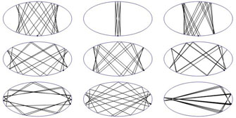 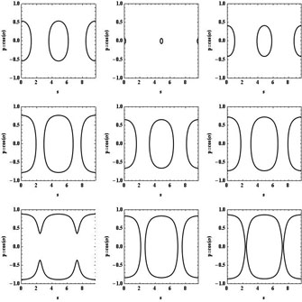Le portrait de phase complet est constitué de l'infinité non dénombrable des trajectoires de phase qui couvrent densément le plan (on n'en a dessiné que quelques-unes) :
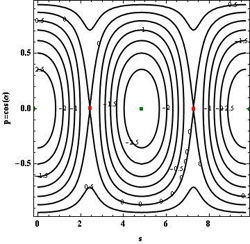Ce portrait est simple parce que le billard elliptique est intégrable : on signifie par là que les coordonnées des rebonds successifs sont reliées entre elles par une relation analytique (on parle d'invariant) qui limite les évolutions possibles aux trajectoires régulières périodiques (rarement) ou quasi-périodiques (le plus souvent). Cet invariant se note :
Chaque courbe du portrait de phase est une courbe de niveau de cet invariant dont la valeur constante est déterminée par le choix des conditions initiales. Il y a une infinité non dénombrable de conditions initiales qui respectent une même valeur de la constante et chacunes d'elles engendrent un nombre fini (si la trajectoire est périodique, ce qui est rare) ou dénombrablement infini (si elle n'est pas périodique, ce qui est le cas le plus fréquent) de points qui se répartissent le long de la courbe de niveau. Au bilan, la courbe apparaît dense.
L'examen du portrait de phase du billard elliptique révèle la présence de points particuliers, situés respectivement en :
- p=0 et s=0 (ou s=L, ce qui revient au même) et p=0 et s=L/2. Ces points (elliptiques, marqués en vert) correspondent aux extrémités de la trajectoire périodique stable longeant le petit axe de l'ellipse,
- p=0 et s=L/4 ou 3L/4. Ces points (hyperboliques, marqués en rouge) correspondent aux extrémités de la trajectoire périodique instable longeant le grand axe de l'ellipse.
Ces deux trajectoires ont ceci de particulier qu'elle sont isolées : aucune autre trajectoire périodique n'existe qui soit infiniment proche d'elles. C'est la raison pour laquelle son portrait de phase se limite à deux points parfaitement visible sur le portrait global. Le billard elliptique accepte beaucoup d'autres trajectoires périodiques (à plus de deux rebonds), en fait une infinité dénombrable mais elles cessent d'être isolées. Voici, pour l'exemple, quelques trajectoires périodiques triangulaires :
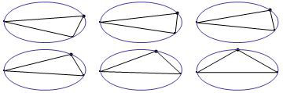 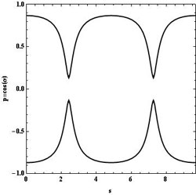Toutes ces trajectoires résultent d'une déformation continue de l'une quelconque d'entre elles et si le portrait de phase de chacune se limite forcément à 3 points, l'ensemble de ces triplets peuplent densément la courbe de niveau correspondant à leur invariant commun. Ces trajectoires périodiques non isolées sont typique des systèmes intégrables. Nous allons voir que, dans le cas d'un billard non intégrable, les trajectoires périodiques sont généralement isolées et que cela change radicalement l'aspect du portrait de phase.
2. Un billard ovale, non intégrable (chaotiqeue).
On considère le billard dont le contour présente un rayon de courbure égal à :
La longueur d'arc, s, vaut 
Les coordonnées cartésiennes du point se réécrivent en fonction du paramètre, y :
Voici quelques exemples de déformations ovales du cercle primitif (d=0). Au-delà de d=1, la frontière cesse d'être simple.
Il n'existe généralement pas d'invariant isolé pour ce type de billard. On s'en rend compte lorsqu'on dresse numériquement le portrait de phase : plus d se rapproche de 1, plus les points se distribuent irrégulièrement, le signe que les trajectoires adoptent un comportement erratique. Voici une esquisse du portrait de phase dans deux cas opposés, d=0.2 et d=0.8 :
Exemple 1 (peu chaotique) : d = 0.2.
La grande différence avec le billard intégrable elliptique, c'est la présence d'un grand nombre de points fixes elliptiques isolés situés au centre d'îlots de stabilité. Ces points, asssociés par paquets de n, correspondent à une trajectoire périodique isolée à n rebonds. Par exemple, l'ensemble des trois points fixes visibles aux alentours de p=0.5 correspond à une trajectoire triangulaire isolée et l'ensemble des six points fixes visibles sur l'agrandissement correspond à une trajectoire hexagonale isolée :
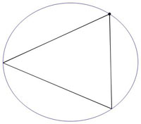 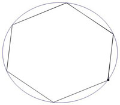Entre deux points elliptiques, il existe toujours un point hyperbolique (correspondant encore à une trajectoire périodique isolée mais cette fois instable), situé à l'intersection des séparatrices. C'est au niveau de ces points instables que le chaos apparaît en premier lieu lorsque d croît. Seul un net agrandissement des régions concernées et la prise en considérations d'au moins 10000 trajectoires pourraient mettre le phénomène en évidence lorsque d ne vaut que 0.2. La situation est plus favorable si d augmente.
Exemple 2 (nettement chaotique) : d = 0.8.
On constate qu'un grand nombre de courbes invariantes ont disparu, remplacée par des point dispersés dans le plus grand désordre. C'est la signature du chaos. Ce chaos prend naissance au niveau des points fixes hyperboliques et le degré de destruction est fixé par le théorème KAM (Kolmogorov-Arnold-Moser). Ce théorème prédit que lorsque l'on perturbe progressivement un système intégrable (ici c'est le paramètre, d, qui mesure cette perturbation sachant que lorsque d=0, le billard est circulaire donc intégrable), c'est au voisinage des points hyperboliques que l'invariant garant de la stabilité du système cesse d'exister.
Voici à titre d'exemples 9 trajectoires correspondant aux conditions initiales, y0= 0, p/6 et p/3 et a0= 1, 3/2 et 2. On oberve que certaines sont quasi-périodiques et d'autres sont chaotiques :
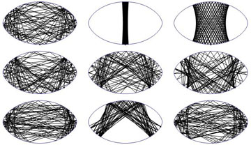
10) Variations sur le thème du gaz de Szilard.
On précise ici un point abordé par ailleurs, dans un exposé consacré à la Thermodynamique du Calcul. Le gaz parfait de Szilard idéalise une molécule ponctuelle unique, rebondissant perpétuellement et élastiquement sur les parois d'une boîte parallélépipédique à D dimensions (D = 1, 2 ou 3).
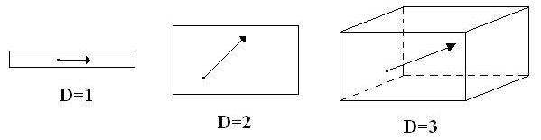C'est un sujet d'étude classique de calculer les caractéristiques physiques d'un tel gaz et de montrer que les lois du gaz parfait s'appliquent à lui :
- Calcul de la pression : 
- Equation d'état : 
- Energie interne : 
- Entropie : 
- Pression :
- Vitesse de la molécule selon la température : 
- Chaleurs massiques : 
A titre d'exemple, voici le travail extractible du gaz de Szilard monomoléculaire dans quelques cas de figures classiques consistant à ôter ce qu'il faut de masse du contrepoids afin que le volume du gaz double (Dans les cas réversibles *** la masse soulevée l'est par fragments infinitésimaux successifs) :
|
On peut compliquer ce modèle par adjonction de molécules supplémentaires mais cela ne suffit pas à le rendre réaliste. En particulier, cela n'explique pas la croissance de l'entropie jusqu'à l'état d'équilibre. Pour parvenir à cette fin, il faut incorporer un ingrédient indispensable, une dynamique chaotique. On amorce ce processus en considérant deux molécules identiques, assimilées à des disques rigides lancés initialement avec des vitesses quelconques. Un rappel, relatif à la connection entre la thermodynamique et la théorie de l'information s'impose à ce stade. Si l'on considère (dans le cas bidimensionnel, D=2, pour simplifier) un ensemble de N molécules préparées dans un état initial très particulier, soit les positions alignées aux sommets d'une grille régulière et les vitesses identiques, il est clair que l'entropie (au sens de Kolmogorov : longueur, en bits, du plus court programme qui imprime une description complète du système à la précision imposée) de ce gaz hors équilibre est très basse parce qu'il existe un programme très court qui encode son état initial. En réalité, un tel système a vite fait d'évoluer vers un état où les positions se dispersent au hasard de même que les vitesses sauf que celles-ci, demeurant contraintes par la conservation de l'énergie, doivent respecter une loi exponentielle (dite de Boltzmann) de répartition à l'équilibre. Ce sont les chocs intermoléculaires qui sont responsables de cette évolution, encore faut-il qu'ils induisent une dynamique chaotique, seule capable d'allonger le programme d'encodage des positions et des vitesses des molécules donc finalement d'augmenter l'entropie.
Deux molécules assimilées à des disques rigides et élastiques suffisent à développer une dynamique de ce type et ce sont les collisions successives qui sont à la base de la sensibilité requise aux conditions initiales. Il est possible d'écrire un programme qui suit fidèlement l'évolution d'un tel système mais son temps d'exécution est d'autant plus long que le rayon des disques moléculaires est petit en comparaison de la taille de l'enceinte (NB : beaucoup de programmes disponibles dans le commerce prétendent y parvenir en un temps "raisonnable" pour N>>2 mais ils trichent généralement en tronquant la suite complète des événements). La simulation qui suit utilise un grand rayon (R=0.2) pour une enceinte carrée de côté, L=1. Cela augmente le nombre moyen de collisions donc accélère la redistribution des vitesses, sans altérer le pouvoir de suggestion du modèle.
Les conditions initiales des molécules, nommées a et b, sont les suivantes : xa(0)=0.2, ya(0)=0.2, xb(0)=0.6, yb(0)=0.7, vxa(0)=2, vya(0)=1, vxb(0)=-1, vyb(0)=1. Si l'on pose que la masse de chaque molécule vaut 2 dans un système d'unités arbitraires, l'énergie cinétique totale de ce gaz élémentaire vaut 7, répartie initialement, entre a et b, dans le rapport 5/2. Les collisions successives, notoirement chaotiques entre deux disques, vont avoir pour effet de modifier progressivement ce rapport afin qu'il tende vers la parité, aux fluctuations près : c'est l'équiparttion de l'énergie pour laquelle l'entropie est maximale.
Le corps du programme repose sur la loi de transformation des vitesses lors du choc élastique des disques :
 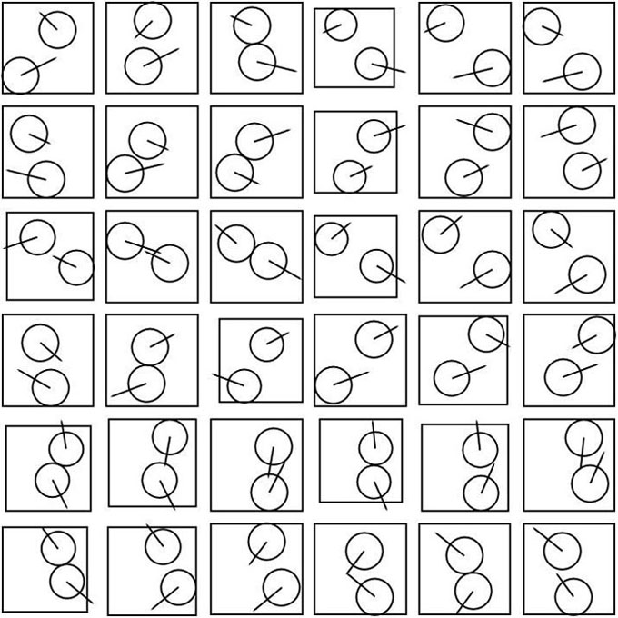En quasiment 3000 unités de temps, 50000 collisions se produisent dont un peu plus de la moitié sont intermoléculaires (Le programme complet et les détails de calculs sont fournis en annexe (Notebook Mathematica)). C'est largement suffisant pour qu'un équilibre statistique ait le temps de s'installer. L'histogramme du rapport des énergies cinétiques des deux particules, valant initialement K(a)/K(b) = 2.5, se concentre à présent autour de la valeur 1, ce qui correspond à l'équipartition statistique de l'énergie (< Ka> = < Kb> que l'on vérifie par ailleurs, dans l'annexe) donc à l'entropie maximale.
Cette dernière inférence résulte de ce que la composante de l'entropie dépendante des vitesses moléculaires d'un gaz de Szilard bimoléculaire vaut ln(va)+ln(vb)=ln(va vb); son maximum sous la contrainte que va2+vb2 se conserve exige que va=vb.
Remarque finale : on lit fréquemmet que les seules lois de la mécanique newtonienne, notoirement invariantes par renversement du temps, ne peuvent prédire un accroissement irréversible d'entropie. Cela cesse d'être vrai lorsque la dynamique du système est chaotique et que l'on adopte la définition informationnelle (au sens de Kolmogorov) de l'entropie (dans l'unité, k ln(2)), à savoir, la longueur (en bits) du plus court programme qui décrit l'état du système à une précision fixée d'avance. Cette longueur augmente naturellement avec le temps du fait que si on exige une description de l'état actuel précise à 10-n, l'encodage de conditions initiales de plus en plus lointaines exige d'encoder un beaucoup plus grand nombre de chiffres significatifs. Rappelons que l'équilibre du système est atteint lorsqu'aucun programme ne peut prétendre faire mieux que la simple description in extenso : l'entropie cesse alors de croître.
11) Compressions astronomiques : Hipparque contre Newton.
On illustre, sur un exemple simple, ce principe fondamental que la science est l'art de (bien) compresser les données. Le test choisi est certes académique mais il permet de cerner l'enjeu du problème : il s'agit de repérer l'évolution d'un astre autour d'un centre gravitationnel considéré comme fixe, pour simplifier. Nous connaissons, depuis les travaux de Newton, un excellent programme compresseur de l'ensemble des mesures que l'on peut faire à ce sujet. Ce programme encode la résolution des équations hamiltoniennes à partir d'un jeu de conditions initiales (Pour la suite, celles-ci ont été posées égales à, r(0) = 1.6, q(0)= 0, r'(0) = 0, q'(0)= 0.3, dans des unités qu'il n'est pas nécessaire de préciser et qui correspondent au choix, m = 1) :
La solution analytique la plus élégante de ce système passe par la recherche des invariants autonomes, moment cinétique (I1) et vecteur de Lenz (I2, I3) (qui incluent la conservation de l'énergie, ). Une simple élimination de p et q entre ces trois invariants autonomes livre la trajectoire elliptique bien connue, .
Quant à l'évolution de l'astre le long de cette trajectoire, on la calcule à l'aide du quatrième invariant, nécessairement non autonome (= dépendant explicitement du temps),
.
En particulier, voici comment varie l'angle, q, en fonction du temps sur une période de trajectoire :
Ce graphe représente l'ensemble des seules mesures accessibles aux premiers astronomes (Les babyloniens, il y a 2700 ans !) qui ont, de fait, commencé à repérer les positions angulaires des planètes par rapport aux étoiles fixes de la voûte céleste.
Hipparque qui vécut entre -190 et -120, fut parmi les premiers à chercher une logique - un programme compresseur - à ces mesures. Convaincu comme le furent beaucoup d'autres encore longtemps après lui que dans un monde parfaitement ordonné par la Divinité, le cercle parfait devait être la clé de toute trajectoire céleste, il s'engagea dans une voie semblable à celle décrite ci-après. Le modèle d'Hipparque sera raffiné trois siècles plus tard par Claude Ptolémée et les choses en resteront là pendant plus de 1000 ans jusqu'à ce que s'installe la révolution copernicienne et les travaux de Kepler et Newton.
Le modèle suivant n'est pas exactement celui d'Hipparque mais il suffit pour illustrer les méfaits d'une compression qui s'engage dans une mauvaise direction. Dans un langage modernisé, nous cherchons une solution modélisée par deux paramètres, a1 et b1, sous la forme trigonométrique,
Si on ajuste les valeurs des paramètres libres, a1 et b1, de telle manière que le graphe de q(t) soit exact en t=2 et t=4, par exemple, les calculs repris en annexe (Notebook Mathematica) révèlent les valeurs, a1 = 0.655882 et b1 = 0.352826. (Note : le paramètre d n'est pas ajustable, en fait, on peut lui donner la valeur que l'on veut car il ne fait que dicter l'échelle dimensionnelle du système. Les mesures angulaires ne contiennent aucune information sur la taile réelle du système gravitationnel étudié, elles ne sont donc pas en mesure de livrer la moindre information à ce sujet et, de fait, les anciens sous-estimaient largement la taille du système solaire).
On contrôle la validité de ce modèle approximatif en superposant les courbes exacte et approchée, puis en affichant la différence absolue entre les deux :
La trajectoire complète est une ellipse mais ce n'est pas la "bonne" ellipse newtonienne. Elle n'est pas davantage parcourue à la "bonne" vitesse mais au bilan les erreurs se compensent presque exactement donnant l'illusion d'un modèle valable.
On peut géométriser ce modèle en faisant appel à deux cercles générateurs, cela fera plaisir à Hipparque. Observez que le cercle rouge est parcouru à vitesse constante dans le sens trigonométrique et que le cercle vert est parcouru à la même vitesse constante mais dans le sens inverse) : au bilan, le point vert qui représente l'astre en mouvement décrit la trajectoire annoncée.
Vu que le modèle précédent ne compresse qu'imparfaitement les données, l'idée vient naturellement de le raffiner en introduisant deux paramètres supplémentaires, a2 et b2, et de recommencer l'ajustement sur base du modèle affiné,
Cette fois, on peut exiger que le graphe de q(t) soit exact en quatre points, t = 2, 2.5, 3.5 et 4 (par exemple) : les calculs repris en annexe trouvent les valeurs, a1 = 0.788279, a2 = 0.153621, b1 = 0.269198 et b2 = 0.0896554. On contrôle comme suit l'amélioration apportée par ce modèle raffiné :
La géométrisation fait cette fois appel à quatre cercles générateurs : le cercle rouge est parcouru à vitesse constante dans le sens trigonométrique, le cercle vert est parcouru à la même vitesse constante mais dans le sens inverse, le cercle violet en sens direct à vitesse double et le cercle noir, à vitesse double et en sens inverse. Au bilan, le point noir qui représente l'astre en mouvement décrit une trajectoire excessivement excentrée qui n'est plus elliptique.
Il semblerait qu'on puisse se montrer très satisfait du résultat obtenu : quelques lignes de programme, à peine, garantissent une précision d'au moins un pour mille. A priori, cela semble nettement plus compact que le programme de Newton qui doit naturellement contenir toutes les sous-routines qu'impliquent la résolution numérique des équations différentielles hamiltoniennes. Le modèle newtonien est pourtant supérieur à deux égards :
- il ne se contente pas de compresser la donnée angulaire, q(t), il fait de même avec les distances mesurées ce que ne fait pas le modèle d'Hipparque. Il suffit pour s'en convaincre de comparer les trajectoires issues des deux modèles, seule l'ellipse newtonienne correspond à la réalité.
- le critère de la taille du programme compressseur est certes essentiel mais il faut également veiller à l'augmentation de la taille de ce programme lorsqu'une précision accrue est exigée. C'est là que le modèle newtonien prend toute sa valeur : pour obtenir une précision double, le modèle newtonien n'exige que l'encodage des conditions initiales en précision double. En comparaison, la série trigonométrique d'Hipparque converge tellement lentement qu'elle nécessite l'adjonction de termes supplémentaires de plus en plus nombreux au point que la dimension du programme compresseur finit par exploser.
12) Chorégraphies classiques.
En mécanique newtonienne, on nomme chorégraphie le ballet que N corps (N>2) décrivent dans l'espace à trois dimensions, sous l'effet des forces de gravitation, pourvu que les trajectoires soient périodiques dans le temps. Un article paru récemment (M. Šuvakov and V. Dmitrašinović, Three Classes of Newtonian Three-Body Planar Periodic Orbits, Phys. Rev. Lett. 110, 114301 (2013), arXiv:1303.0181) fait état de nouvelles découvertes de ce genre dans le cas de 3 masses égales évoluant dans un plan. Les résultats esthétiques font l'objet d'une présentation particulièrement réussie sur ce site.
On y apprend qu'une configuration en forme de papillon est possible pour trois masses unitaires sous réserve de respecter un jeu précis de conditions initiales : positions initiales en (-1, 0), (0, 0) et (+1, 0) et vitesses initiales valant respectivement, (v1, v2), (-2 v1, -2 v2) et (v1, v2), où v1 = 0.306893 et v2 = 0.125507. Une trajectoire complète est balayée en 6.235641 unités de temps. Dans les figures proposées, 3 couleurs différentes ont été utilisées pour distinguer les trajectoires.
La figure précédente, empruntée à l'article original, n'est pas dessinée à l'échelle. On a comblé cette lacune en recalculant l'évolution du système en annexe (Notebook Mathematica).
On rend les trajectoires plus lisibles en les restreignant aux deux premières unités de temps d'où on distingue clairement les points de départ et le début de l'évolution de chacune :
Un point demeure cependant obscur, qui concerne les conditions physiques autorisant ce type de mouvement. Les calculs précédents ont, en effet, été effectués dans un système d'unités réduites sans rapport avec les étalons habituels, le kilogramme, le mètre et la seconde. Il est instructif de repasser aux unités internationales afin de mieux visualiser les bornes des trajectoires et accessoirement de s'assurer que les vitesses ne s'approchent pas de celle de la lumière, auquel cas les équations de Newton perdraient toute signification.
Dans le système international, le hamiltonien qui caractérise entièrement le système à 3 corps, s'écrit, en toute généralité :
En fait, les calculs ont été effectués sur base d'un hamiltonien réduit, où la constante de la gravitation, G, a été posée égale à 1. Cela présuppose que l'on a défini de nouvelles unités de masse, de longueur et de temps, M, R et T, permettant de réécrire H sous une forme pure (sans unité), où les lettres grecques désignent les grandeurs physiques également débarrassées de leur unité naturelle :
Passer de la valeur classique pour la constante universelle de la gravitation, G = 6.6723 10-11 m3/(s2kg), à la valeur pure, G = 1, revient à substituer au kilogramme, au mètre et à la seconde des unités, M, R et T satisfaisant la relation, . Il y a donc une triple infinité de conditions initiales garantissant des trajectoires en forme de papillon, de dimensions évidemment différentes. Le dernier paragraphe illustre ce point sur deux exemples aux échelles dimensionnelles opposées.
- L'exemple 1 est académique : M = 1 (kg) et L = 1 (m), autrement dit 3 masses d'un kg sont initialement alignées à 1 mètre de distance l'une de l'autre, quelque part dans l'espace, loin de toute autreinfluence gravifique. Pour déterminer les vitesses initiales qu'il convient de leur communiquer, il faut connaître l'unité de temps, T. La relation précédente fournit la valeur, T = 122423 (s) = 1.41693 (jours). Vu que l'unité de longueur n'a pas changé (L = 1 (m)), les vitesses pures, v1 = 0.306893 et v2 = 0.125507, doivent simplement être multipliées par 1/T, ce qui donne : v1 = 2.50682 10-6 et 1.02519 10-6 (m/s). Ces valeurs sont très faibles d'où la période du mouvement est longue, soit, 6.324449 x 122423 (s) = 774258 (s) = 8.96132 (jours).
- L'exemple 2 est plus proche d'une réalité astronomique : M = 1022 (kg) et L = 108 (m). Pour déterminer les vitesses initiales, il faut recalculer l'unité de temps, T. La même relation fournit une valeur 10 fois plus grande qu'au point 1 alors que L est 100 millions de fois plus grand. Il en résulte que les vitesses, v1 = 0.306893 et v2 = 0.125507, multipliées par L/T, sont 107 fois plus grandes, soit, v1 = 25.0682 et 10.2519 (m/s). La période du mouvement est naturellement 10 fois plus grande, soit, 89.6132 (jours).
Dans tous les cas étudiés, les vitesses demeurent faibles par rapport à celle de la lumière (c = 3 108 (m/s)) et l'approximation newtonienne classique est valable. Cela cesserait d'être vrai si les masses augmentaient considérablement plus vite que les dimensions des systèmes astronomiques. A ma connaissance, personne n'a jamais calculé une chorégraphie relativiste.
13) Chute libre relativiste.
On considère le cas (idéalisé) d'un point matériel de masse (au repos), m0, initialement au repos (v0 = 0), tombant d'une altitude, r0, sur un centre de masse, M. On pose M>>>m0 afin d'être en mesure de considérer que ce centre demeure fixe. En mécanique classique, l'équation de Newton, F = - GMm0/r2 = d(m0 v)/dt, décrit cette chute et il n'y a pas besoin de mettre des vecteurs, vu qu'on est à une dimension.
A mesure que le point chute, r tend vers 0, la force tend vers l'infini donc ausi l'accélération et la vitesse. La conservation de l'énergie confirme ce dernier point :
La solution qui précède n'est réaliste qu'aux faibles vitesses, v/c << 1 : on sait, depuis Einstein, que la vitesse d'un point matériel ne peut excéder, c, la vitesse de la lumière. En fait l'équation de Newton cesse d'être valable lorsque v approche c.
Physiquement, on peut voir les choses comme suit : lorsqu'un objet prend de la vitesse, sa masse inerte incorpore l'énergie cinétique acquise, K, sous la forme d'un complément de masse Dm = K/c2. L'équation de mouvement s'écrit encore, F = - GMm/r2 = d(m v)/dt, où y a lieu de remplacer la masse au repos, m0, par la "masse en mouvement", m = m0/sqrt[1-v 2/c 2]. L'équation complète s'écrit à présent :
Le second membre de cette équation incorpore le fait que la masse inerte du point matériel augmente au-delà de toute limite lorsque v approche c, rendant toute accélération additionnelle de plus en plus difficile. Toutefois, le premier membre nous apprend que la force de gravitation augmente, elle aussi, au-delà de toute limite, précisément parce que la masse du point ne cesse d'augmenter. Ces deux effets agissent clairement en sens contraire et il n'est pas clair a priori qui l'emporte. En fait les calculs numériques repris en annexe (Notebook Mathematica) montrent que le second membre dicte sa loi au premier, interdisant à la vitesse de dépasser la limite, c. On peut les confirmer analytiquement en observant que l'équation de mouvement peut être réécrite et intégrée sous la forme :
On voit que v = r'(t) tend effectivement vers -c à mesure que r se rapproche de 0 (le signe - parce que l'axe des vitesse pointe vers l'infini). Cette solution peut encore s'écrire sous la forme d'une intégrale première (= constante du mouvement) :
Sa forme est inhabituelle car la force relativiste dépendant de la vitesse, elle ne dérive pas d'un potentiel au sens ordinaire du terme.
Ce calcul a été effectué dans le cadre de la théorie de la Relativité restreinte. A ce titre, il considère que le mouvement se déroule dans un espace euclidien, muni d'une métrique Minkowskienne prenant en compte l'invariance de c pour tous les observateurs inertiels. On considère, depuis 1916 (date de la publication de la théorie de la Relativité générale), qu'une théorie plus correcte de la gravitation doit prendre en considération une métrique plus compliquée correspondant à un espace (non euclidien) déformé par le centre attracteur. Il y aurait lieu de reprendre les calculs, dans cette perspective, pour un résultat similaire : la vitesse de la lumière reste invariante (en grandeur pas en direction) pour tous les observateurs, inertiels ou non, et elle demeure une limite infranchisable. Dans tous les cas, l'existence d'une limite de vitesse infranchissable est liée au fait que pour la dépasser il faudrait dépenser une énergie infinie ce qui n'est pas possible. A noter qu'en Relativité générale, le problème de la chute se complique du fait de l'existence, à proximité immédiate du centre, d'une singularité liée à l'horizon de Schwarzschild, RS = 2G M/c2 (Effet de trou noir).
Il est également possible de développer un argument logique prouvant que c est infranchissable. On montre en relativité qu'un observateur qui dépasserait cette limite serait capable d'inverser l'ordre temporel entre deux événements dont l'un serait la cause naturelle de l'autre. Une telle rétroaction dans le temps serait perçue comme une violation du principe de causalité qui interdit communément à l'effet de précéder sa cause sous peine de paradoxes insurmontables.
14) Attraction universelle.
On sait, depuis Newton, que tous les corps massifs s'attirent en raison directe du produit de leurs masses et en raison inverse du carré de la distance qui les sépare, soit : F = G M1M2/r2. G est une constante universelle dont la valeur est, G = 6.67 10-11 m3/(kg s2), dans le système international d'unités. Cette loi ne suffit pas, il manque le mode d'emploi, également fourni par Newton : dans un référentiel inertiel (cfr l'article 15 pour une définition), tout corps de masse, m, qui subit une force extérieure, F, prend une accélération, a = F/m. Ces deux lois suffisent à décrire à peu près exactement le comportement des objets massifs usuels. Un écart subsiste cependant, minuscule dans le cas des planètes du système solaire (c'est Mercure qui en souffre le plus) mais plus important dans le cas d'objets super-massifs (Trous noirs, par exemple). C'est la Relativité Générale qui explique le mieux (actuellement !) cet écart : Einstein ne croit pas à la notion de force, d'ailleurs il n'en a pas besoin. Il postule plutôt que toute masse, M, courbe l'espace-temps voisin selon une loi bien définie, au point qu'il cesse d'être euclidien. A nouveau, cette loi ne suffit pas, il manque le mode d'emploi : toute masse extérieure, m, qui s'approche de M suit une trajectoire (dite géodésique) qui extrémise le temps propre écoulé, celui mesuré par l'horloge qui accompagne m. Cette horloge doit être synchronisée, à tout instant, dans le référentiel inertiel tangent, en respectant la procédure issue de la Relativité restreinte et basée sur l'invariance de la vitesse de la lumière, c.
Revenons au cas simple, newtonien : Deux billes de verre sphériques identiques, de rayon R et de masse m, sont initialement immmobiles à la distance mutuelle, r0, mesurée de centre à centre. Elles déforment donc l'espace-temps et les lois d'Einstein devraient permettre d'établir qu'elles vont se rapprocher jusqu'à se toucher. Combien de temps cela prendra-t-il ? En fait, il n'est pas nécessaire de déployer l'artillerie lourde pour résoudre ce problème, les lois de Newton suffisent amplement car les masses concernées sont bien trop faibles pour que la relativité introduise une correction ! Le mouvement s'effectuant à une seule dimension (l'axe joignant les centres des billes), il suffit d'écrire que l'énergie se conserve sous la forme (v = dr/dt) :
Le résultat s'écrit :
Exemple numérique : si on pose que le rayon des billes vaut, R = 1 cm, que leur densité est égale à 2.5 et que la distance de départ vaut r0 = 1m, on trouve que le temps qu'il faut pour qu'il y ait contact, soit r = 2R, vaut 21.7 jours. On note que ce temps s'allonge indéfiniment lorsque m tend vers 0, ce qui est raisonnable.
15) Galilée versus Lorentz.
La notion d'observateur est essentielle en physique, particulièrement lorsqu'il est inertiel. Par définition, un observateur est globalement inertiel lorsqu'il dérive librement (= sans frein ni moteur) dans un espace suffisamment vide de matière et sans rotation par rapport aux étoiles lointaines. Les observateurs globalement inertiels sont privilégiés : ils écrivent les lois de la physique plus simplement que n'importe quel autre observateur. Strictement parlant, de tels observateurs n'existent pas car dans toute portion de l'espace où l'on se propose de faire de la physique intéressante, il y a généralement au moins un astre plus ou moins proche. Cependant les observateurs terrestres ne sont pas si éloignés que cela de cet idéal et ils ont appris à faire les corrections nécessaires en fonction de la précision exigée pour l'analyse des résultats de leurs expériences.
Tout observateur, O', en translation rectiligne uniforme (MRU) par rapport à un observateur globalement inertiel, O, est également globalement inertiel et on passe des coordonnées de l'un à celles de l'autre par la transformation de Galilée, dans le cas classique (typiquement aux faibles vitesse, v<<c), et de Lorentz dans le cas relativiste. Dans un système d'unité où la vitesse de la lumière vaut, c = 1, la vitesse relative entre les observateurs, v, est une nombre compris entre 0 et 1. On pose pour simplifier que cette vitesse relative est alignée selon les axes x et x' confondus. Avec ce choix d'unités, les coordonnées x et t se mesurent en mètres. Les transformations de coordonnées se notent :
Galilée : x' = x - v t et t' = t qui s'inversent en x = x' + v t' et t = t',
Lorentz : x' = g (x - v t) et t' = g (t - v x) qui s'inversent en x = g (x' + v t') et t = g (t' + v x') (on a posé, g = (1-v2)-1/2).
C'est un sujet d'étude classique de déduire que l'espace et le temps sont absolus dans le premier cas et relatif dans le second. Plus précisément, étant donné un intervalle de temps et une distance, mesurés dans le référentiel au repos, il s'agit d'établir ce que mesure un observateur en mouvement. Le protocole suivant doit être respecté si l'on veut que ces comparaisons aient un sens :
1) Dans le référentiel au repos, il importe que l'intervalle de temps considéré sépare deux événements se produisant au même endroit (Dx = 0), sans quoi on pourrait craindre un retard temporel parasite dû au fait que l'information ait mis des temps différents pour parvenir à l'observateur (L'information ne se propage pas à vitesse infine mais à vitesse, c).
2) Le repérage des abscisses des extrémités du segment que l'on veut mesurer peut se faire à n'importe quel instant dans le référentiel eu repos (Dt quelconque) mais pas dans le référentiel en mouvement : on doit impérativement avoir Dt' = 0 car il n'y aurait aucun sens de repérer, à des instants différents, les extrémités d'un segment mobile que l'on veut mesurer.
Le calcul est trivial dans le cas classique, on a successivement : Dt = Dt' et Dx = Dx' + v Dt' = Dx', autrement dit les deux observateurs mesurent les mêmes intervalles de temps et d'espace.
Il est moins immédiat dans le cas relativiste et le respect des deux contraintes mentionnées (Dx = 0 et Dt' = 0) livre sans trop de peine, Dt' = g Dt - v g Dx = g Dt (dilatation du temps) et Dx' = g Dx - v g Dt = g Dx - g v2 Dx = Dx/g (contraction des longueurs). Ces relations concernent l'observateur O' en translation uniforme par rapport à O. Naturellement, dans le cas où O' se considère au repos, c'est O qui est en mouvement à la vitesse -v et les formules précédentes deviennent, Dt = g Dt' et Dx = Dx'/g. Il n'y a pas contradiction entre les deux groupes de formules car elles concernent des observateurs différents.
Il est intéressant de traduire les transformations de Galilée et de Lorentz en forme graphique et de retrouver les formules de contraction et de dilatation.
Ces lois de transformation rappellent, en effet, formellement les formules de changement d'axes en géométrie analytique du plan (x, t). L'analogie n'est cependant parfaite que moyennant quelques précautions qui ne sautent pas aux yeux. On rappelle que les relations de changement de repères (obliques) se notent en toute généralité :
On peut poser q = p/2 sans altérer la généralité de l'étude. Cela a pour effet de rendre orthogonaux les axes, x et t, de l'observateur O présumé immobile. Par contre, les axes x' et t' doivent demeurer obliques. Les projections se font parallèlement aux axes comme indiqué sur la figure ci-contre, dans le cas du point P. Avec ce choix, q = p/2, les formules de changement d'axes se simplifient en :
Aucun choix d'angles a et b ne permet de réduire ces formules aux transformations en vue (Galilée et Lorentz). Pour que cela soit possible, il faut adopter des échelles différentes dans la représentation graphique des coordonnées x' et t'. Cela revient à introduire des facteurs d'échelle, l et m :
Etudions en détails le cas de la transformation de Lorentz, on doit avoir :
Il suffit d'identifier les coefficients des variables, x' et t', pour trouver l'orientation correcte des axes et les facteurs d'échelle. On trouve : l = m = (1+v2)1/2/(1-v2)1/2, tg(a) = v et tg(b) = 1/v (Les angles a et b sont complémentaires).
Les calculs sont plus simples dans le cas de la transformation de Galilée et on trouve cette fois : l = 1, m = (1+v2)1/2, a = 0 et tg(b) = 1/v. Les figures qui suivent résument les situations. Insistons sur le fait que les unités portées sur les axes issus de O et de O' s'expriment bien en mètres dans tous les cas et que ce sont les représentations géométriques de ces unités qui sont affichées avec des échelles différentes. Tout calcul effectué sur base de ces figures doit en tenir compte.
Commençons par expédier le cas peu intéressant de la transformation de Galilée. La figure (de gauche) est exagérée puisque la vitesse est sensée être très inférieure à c (L'axe t' devrait quasiment coïncider avec l'axe t). Quoi qu'il en soit, on voit qu'une longueur unité pour O (base des parallélogrammes) est vue à l'identique (à t' constant) par O', soit Dx = Dx'. En ce qui concerne l'intervalle de temps unité, mesuré par O, il semblerait à première vue qu'il est vu plus grand par O' (Hypoténuse du triangle rectangle lié à l'origine, valant (1+v2)1/2) mais c'est une illusion que corrige le facteur d'échelle, m = (1+v2)1/2. Lorsqu'on tient compte de ce facteur, on trouve que l'intervalle de temps est identique pour O et O', soit Dt = Dt'. Envisageons, à présent, le cas relativiste, plus intéressant mais plus délicat.
La dilatation du temps et la contraction des longueurs résultent de l'application de la relation des sinus dans les triangles représentés ci-contre.
Les deux figures de gauche considèrent que l'observateur O' est immobile et que O est en mouvement. Imposant les contraintes, on trouve, dans l'ordre :
- Dx = 0 (on a bien que les extrémités de Dt se situent à x constant) d'où, par résolution du triangle, Dt' = g Dt, et
- Dt' = 0 (les extrémités de Dx' sont repérées à t' constant) d'où, par résolution du triangle, Dx' = Dx/g.
Les deux figures de droite considèrent que l'observateur O est immobile et que O' est en mouvement. Imposant les contraintes, on trouve, dans l'ordre :
- Dx' = 0 (on a bien que les extrémités de Dt' se situent à x' constant) d'où, par résolution du triangle, Dt = g Dt', et
- Dt = 0 (les extrémités de Dx sont repérées à t constant) d'où, par résolution du triangle, Dx = Dx'/g.
Dans tous les cas la prise en compte des facteurs d'échelle, l = m = (1+v2)1/2/(1-v2)1/2, est essentielle.
16) Le faux paradoxe des vrais jumeaux.
Cette histoire n'a jamais vraiment cessé de faire couler de l'encre. Bien entendu aucun paradoxe ne pouvant exister dans une théorie physique consistante, ce problème est, de fait, résolu depuis longtemps. Sinon il y a longtemps qu'on aurait changé la théorie et cela se saurait. En substance, le "paradoxe" fait référence à deux jumeaux qui se quittent temporairement pour un voyage relatif. Chaque jumeau, qui connait la théorie de la Relativité restreinte, voit son frère se déplacer par rapport à lui et s'attend à le retrouver plus jeune au moment du retour. Si cela devait se confirmer, la théorie serait inconsistante.
Cette analyse repose sur le fait bien connu que lorsqu'un observateur (globalement) inertiel mesure (avec ses propres instruments) un intervalle de temps vécu par un autre observateur inertiel, en translation rectiligne uniforme à la vitesse, v, par rapport à lui, il trouve un temps dilaté. Cet intervalle de temps pouvant correspondre à un certain nombre de battements de coeur, il en résulte que le jumeau au repos s'attend à ce que son frère vieillisse moins vite que lui.
Elle ignore cependant le fait essentiel que les jumeaux ne peuvent prétendre demeurer inertiels pendant toute la durée de l'expérience : si l'on pose pour simplifier que le jumeau au repos n'a pas cessé de l'être, son frère qui a voyagé a nécessairement dû interrompre sa translation uniforme ne serait-ce que pour faire demi-tour et venir se comparer physiquement à son jumeau. En inversant le sens de sa vitesse, ce frère voyageur a cessé d'être inertiel, ce qui rompt la possibilité d'un raisonnement symétrique. Voyons cela quantitativement en posant, pour simplifier, qu'au départ les deux frères sont au repos dans un même référentiel inertiel. Pour fixer les idées, appelons les frères Félix (F pour fixe) et Marcel (M pour mobile). Le jour de leur 21ème anniversaire, ils se mettent d'accord sur le protocole suivant : F demeure fixe dans le référentiel initial et M entame un périple devant durer, t = 7 ans, pour l'aller et, t = 7 ans, pour le retour, soit au total, 2t = 14 ans, temps mesuré à l'aide de l'horloge embarquée par M. La trajectoire de M dans l'espace-temps de F est connue des deux jumeaux : elle se compose de deux translations à vitesses, v, et ,-v, séparées par un demi-tour supposé instantané.
Pour F, les choses sont simples car étant globalement inertiel, il peut utiliser les lois de la relativité restreinte. Dans son référentiel, F sait que sa trajectoire d'espace-temps correspond au temps propre maximum. Autrement dit, quel que soit le mouvement adopté par M, F sait qu'au moment du retour à la maison, M paraîtra plus jeune que lui, conformément à l'inégalité suivante (On pardonnera l'utilisation du mot anglais pour désigner le vieillisement, trop long en français) :
Dans l'exemple qui nous intéresse le calcul des intégrales est immédiat puisque les intégrands sont constants. Les calculs numériques sont simples et parlants si l'on pose que la vitesse relative est proche de la vitesse de la lumière, soit : v = 24/25 c (Valeur empruntée à Taylor et Wheeler - Space Time Physics). Le facteur de Lorentz vaut simplement : (1 - v2/c2)1/2 = 7/25.
On pourrait s'inquiéter de ce que ce modèle ne tient pas compte de l'accélération initiale de M (lorsqu'il quitte F) et de la décélération finale (lors du retour) mais ce point n'est pas essentiel car on peut imaginer un protocole modifié où ces accélérations n'existent pas, les deux frères se faisant signe lorsqu'ils passent l'un en face de l'autre, par deux fois (au départ et à l'arrivée), tout en brandissant une pancarte qui affiche à tout instant l'âge mesuré par chacun.
Le vieillissement de M, mesuré par lui, vaut 2t = 14 années, par hypothèse. On écrit donc : Aging(M) = 2t = 14 = T (1 - v2/c2)1/2 = 7T/25, d'où T = Aging(F) = 50 années. Pour F, tout est clair : au moment des retrouvailles, il s'attend à être âgé de 21 + 50 = 71 ans alors que son frère n'aura que 21 + 14 = 35 ans. Toute autre trajectoire, plus compliquée, empruntée par M (et respectant les 14 années de temps propre à M) ne changerait évidemment rien à l'âge final de M (35 ans) mais modifierait celui de F.
F peut raisonner autrement, sur base de l'effet Doppler relativiste longitudinal : imposons à l'horloge de M d'émettre un flash lumineux, en direction de F, toutes les secondes et voyons à quel rythme F les reçoit (On peut remplacer les tics de l'horloge par les battements du coeur de M !). Lors du mouvement d'éloignement il les reçoit à un rythme ralenti, (1 - v/c)1/2 / (1 + v/c)1/2 = 1/7, mais c'est le contraire lors du retour, (1 + v/c)1/2 / (1 - v/c)1/2 = 7. Au bilan, tout se passe comme si F appréciait très différemment les durées de chaque trajet (un rapport 49 dans l'exemple). On a bien : t (1 - v/c)1/2 / (1 + v/c)1/2 + t (1 + v/c)1/2 / (1 - v/c)1/2 = 2t / (1 - v2/c2)1/2 = 50 ans.
Il est intéressant mais nettement plus délicat de raisonner du point de vue de M. La difficulté provient du fait que M ne peut plus appliquer les lois de la relativité restreinte à tout instant car il cesse d'être inertiel lors de la phase d'inversion du mouvement.
Du point de vue de M, il est bien vrai que chaque MRU a pour conséquence un ralentissement du vieillissement de F d'un facteur 7/25. Sur cette seule base, M prédirait pour F un vieillissement de 14 (7/25) = 3.92 années seulement ce qui contredirait fortement le résutat précédent (50 ans pour rappel !). Ce calcul est cependant largement incomplet car il ne tient pas compte de la phase d'inversion des vitesses. Pour y voir plus clair, considérons d'abord le diagramme ci-contre qui représente le voyage, OBD, de M, dans les référentiels liés à F (x et t) et à M (x' et t'). Par hypothèse, le voyage aller dure 7 ans, mesurés par M : sur la figure, le segment correspondant, OB (aligné sur l'axe t'), mesure 7l = 12011/2 (n'oubliez pas le facteur d'échelle, l = (1+v2/c2)1/2/(1-v2/c2)1/2 = 12011/2/7, cfr article 15). Sachant que tg(a) = v/c = 24/25, d'où cos(a) = (1+v2/c2)-1/2 = 25/12011/2 et sin(a) = (v/c) (1+v2/c2)-1/2 = 24/12011/2, on dispose de tout ce qu'il faut pour calculer les segments OC et CA (donc leurs symétriques, C'D et AC'), tous alignés sur l'axe t : il suffit d'appliquer la relation des sinus aux triangles OCB et CAB. On trouve : OC = C'D = 49/25 = 1.96 et CA = AC' = 242/25 = 23.04, d'où OA = 25 et OD = 50 années comme attendu. Les segments, CB, et son symétrique, BC', représentent les lignes de simultanéité pour M (t' y est constant, d'abord à l'aller puis au retour, axes x' et t' non représentés dans ce deuxième cas pour ne pas encombrer la figure). Autrement dit, du point de vue de M, le vieillissement de F calculé sans tenir compte de l'inversion de trajectoire correspond aux seuls segments OC+C'D = 3.92 années. Les segments manquants, CA+AC' = 46.08 années, comptabilisent les effets de l'accélération brutale subie par M.
Il reste à comprendre l'origine physique de la désynchronisation de l'horloge de F telle que perçue par M au moment de l'inversion de trajectoire (le segment CC' = 46.08 années, aligné sur t). Lors de cette inversion, M, qui se considère au repos, ressent un violent pseudo-champ de pesanteur orienté dans le sens opposé à l'accélération relative, g, entre M et F, donc dans le sens allant de F vers M. Tout se passe, pour M, comme si F et M se situaient pendant un court instant en deux points, situés à distance d, entre lesquels règnent une différence de potentiel gravifique considérable valant, f = g d. On sait que l'horloge située au point de potentiel le plus bas accélère par rapport à l'autre d'un facteur f/c2. Lors du demi-tour, M, passe brutalement, disons plutôt en un temps très court, dt', de la vitesse v à la vitesse -v : il éprouve un pseudo-champ de gravitation, f = 2v d / dt'. M se situe en amont dans ce champ, là où le potentiel gravifique est plus élevé, et F se situe en aval, où le potentiel est plus bas, et d est la distance séparant M de F. Pour F, cette distance, d, vaut AB = v T/2 (24 années dans l'exemple si on pose c=1) mais pour M, qui nous intéresse plus particulièrement, elle ne vaut que, d = v T/2 (1 - v2/c2)1/2 (contraction de Lorentz). Pendant le très court intervalle de temps qu'a duré l'inversion de vitesse, la marche, dt, de l'horloge de F est vue, par M, considérablement accélérée, du facteur, f/c2. Autrement dit, M voit dt durer (1 + f/c2) dt, soit un accroissement de 2v d (dt/dt')/c2. Dans l'exemple, en tenant compte de la dilatation des temps mesurés par F et M , dt/dt' = 1/(1 - v2/c2)1/2 , on (re)trouve que, pour M, l'horloge de F avance brutalement d'une quantité égale à : (2v/c2)(vT/2) = (24/25)2 50 = 46.08 années, c'est bien la mesure du segment CC' qu'on voulait expliquer. En résumé, au cours de son voyage, M a vu l'horloge de F tourner plus lentement la majeure partie du temps mais galoper à folle allure pendant le court instant qu'a duré l'inversion de vitesse, ce dernier effet l'emportant largement, au bilan.
Cette analyse est grossière dans la mesure où, dans la réalité, le demi-tour exécuté par M ne peut se faire instantanément. Il y aurait lieu de reprendre les calculs sur des bases plus réalistes en posant par exemple que M suit une trajectoire qui l'éloigne de F puis le rapproche continûment. La prédiction de l'âge de M, effectuée par F, demeurerait facile, elle serait encore donnée par l'intégrale ci-dessus. Par contre la prédiction de l'âge de F, effectuée par M, devrait tenir compte du pseudo-champ de gravitation vécu par M, à tout instant, ce qui nécessiterait de connaître la métrique d'espace-temps correspondant à la trajectoire suivie.